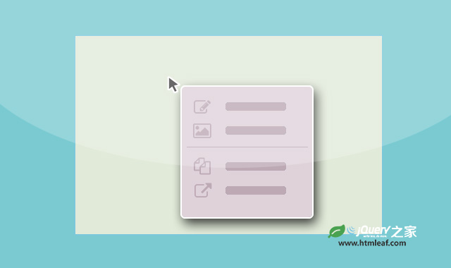

简单实用的Bootstrap右键上下文菜单插件
A lightweight jQuery plugin for creating Bootstrap powered context menus
jQuery之家
返回下载页
jQuery Contextify Demo
使用右键点击这里
如果你喜欢这个插件，那么你可能也喜欢:
纯JavaScript右键上下文菜单插件

基于Bootstrap的jQuery右键上下文菜单插件